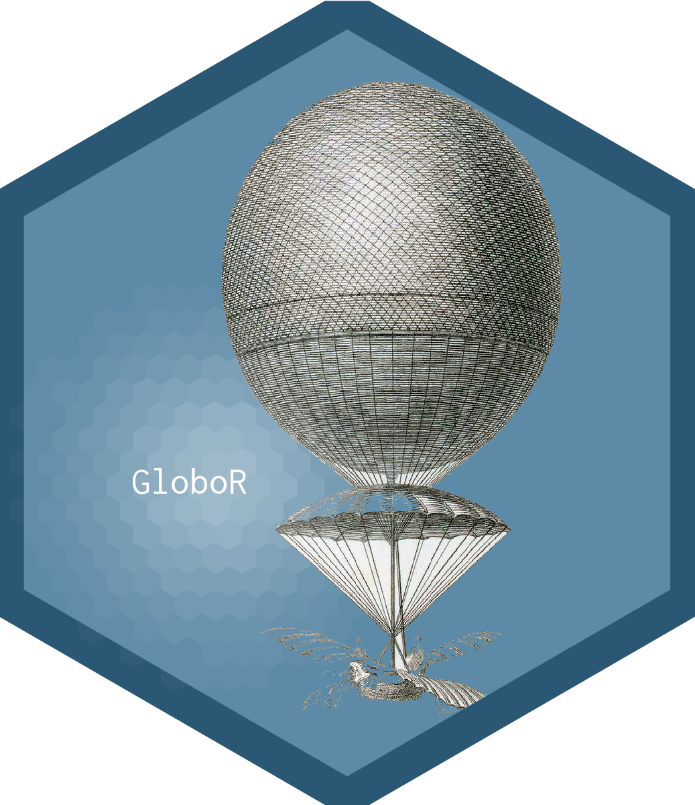
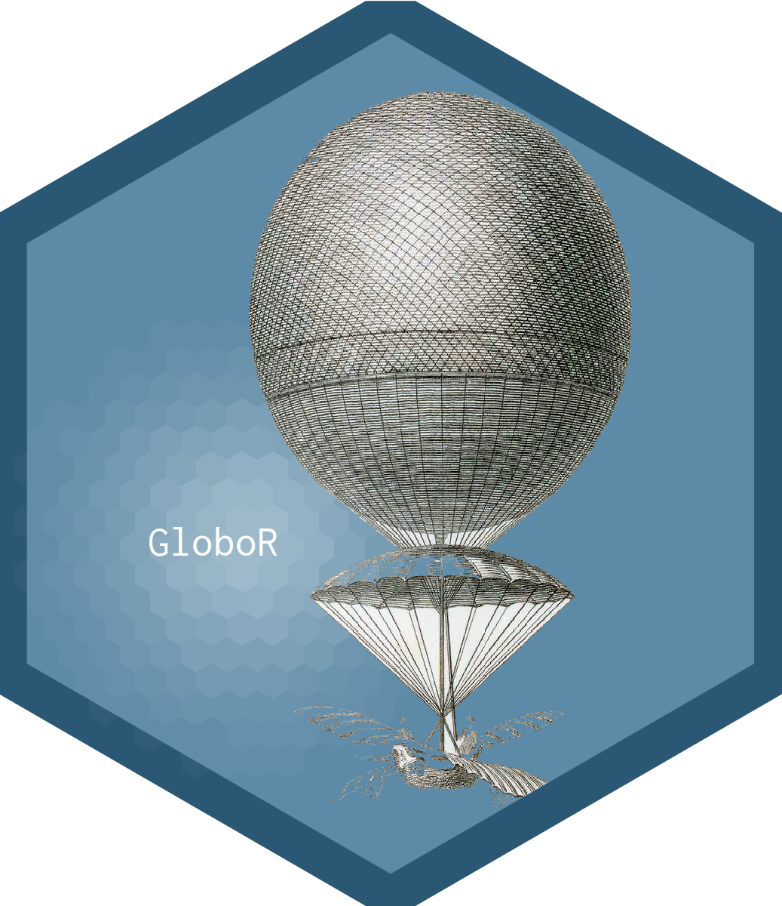
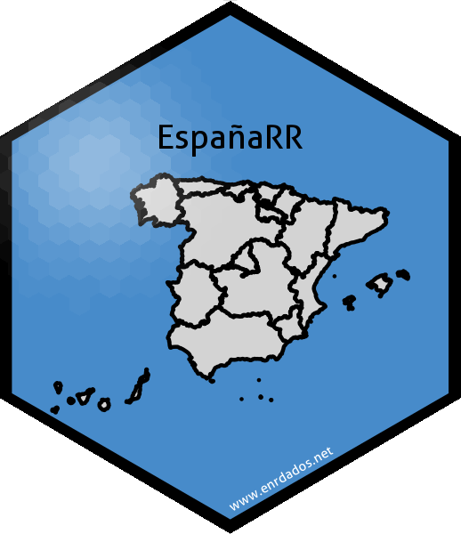
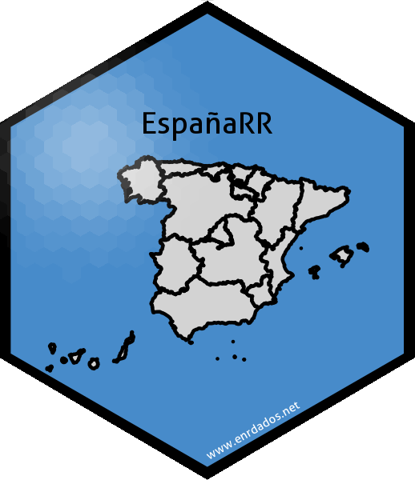

Cuando hice el logo del blog no sabía que existía un paquete dedicado a esto de hacer logos hexagonales en R, así que lo diseñé con un programa gráfico al estilo “tradicional”.
El ecosistema de R está creciendo tan rápido que hoy día podemos encontrar librerías para TODO, incluso para pintar nuestro logo hexagonal sin salir del entorno del programa. Preparad vuestra imaginación que hoy vamos a hablar de la librería hexSticker con la que vamos a diseñar unos cuantos logos.
hexSticker
Se trata de un paquete que puedes instalar desde CRAN, y cuya web de desarrollo está en github https://github.com/GuangchuangYu/hexSticker. Para instalar el paquete:
# Instalar el paquete
install.packages("hexSticker")
Su uso principal es para hacer logos de nuevos paquetes, pero también lo puedes usar para lo que quieras relacionado con pintar hexágonos, que es lo que hace.
Básicamente crea un hexágono en el que puedes elegir los colores de fondo, el borde y algunos parámetros gráficos, además puedes insertar dentro unos complementos que son:
- una imagen externa (jpg, png, svg…), o un gráfico de ggplot que sitúa en el centro del hexágono
- un título o nombre del paquete que por defecto sitúa como texto en el centro
- un enlace web, por defecto situado en la parte baja derecha de la figura.
Para cada una de estas cosas nos deja unas opciones de personalización como desplazarlas un poco en x o y por el lienzo, modificar el tipo y tamaño de letra y los colores. Además tiene otros argumentos para limpiar la zona exterior del hexágono si se sale la imagen (white_around_sticker) o añadir un reflejo luminoso al logo (spotlight) que da un toque especial más profesional.
Lo mejor es ver cómo funciona sobre ejemplos. En este primer caso tenemos una pequeña imagen (png) de un globo con fondo transparente que queremos poner en el centro del sticker:
library(hexSticker)
## Warning: package 'hexSticker' was built under R version 4.0.4
#ruta relativa a la imagen de fondo que queremos en el logo
imgurl <- "images/globo2.png"
# creamos nuestro sicker
logo.1<-sticker(imgurl, #imagen de fondo
s_x=1, s_y=1, # posición imagen relativa 1=centro
s_width=0.6, s_height=0.5, #estirar la imagen ancho-largo
#opciones del título
package="GloboR", # titulo del logo
p_color = "black", #color de la fuente de titulo
p_size=15, # tamaño fuente del titulo
p_x = 0.7, p_y = 1.4, #posicion del titulo
#opciones de la url
url = "www.enrdados.net", # url
u_color = "white", # color fuente enlace
u_size = 6, # tamaño del fuente enlace
h_fill="salmon", h_color="black",h_size = 2, #color de relleno, borde hex y grosor de linea
#opciones generales
filename="globo1.png", # fichero de salida
white_around_sticker = T,# recorta el borde exterior del hex
spotlight=F) #añade una luz que ilumina parte del sticker
#dpi = 600)
logo.1

GloboRR
Esta vez partimos de un png transparente que metemos en un hexagono de color azul y añadimos un brillo en el sticker
library(hexSticker) # Create Hexagon Sticker in R
library(showtext) # Using Fonts More Easily in R Graphs
## Loading required package: sysfonts
## Loading required package: showtextdb
#Loading Google fonts (http://www.google.com/fonts)
font_add_google("Inconsolata", "incon")
logo.2<-sticker(
# Subplot (image)
subplot = "images/globo2.png", # nombre y ruta relativa de la imagen
s_y = 1, # Posición (y)
s_x = 1.1, # Posición (x)
s_width = 0.6, # ancho , escala 1=sin cammbios
s_height=0.6, # alto
# Font
package = "GloboR", # titulo
p_size = 15, # Fuente tamaño
p_y = 0.8, # Posición tit (y)
p_x=0.6, # Posición tit (x)
p_family = "incon", # Define fuente letra
# Spotlight
spotlight = TRUE, # pone el brillo o luz
l_y=0.8, # Posición de la luz (y)
l_x=0.7, # Posición de luz (x)
# Sticker colors
h_fill = "#5d8aa6", # Color del fondo
h_color = "#2A5773", # Color del borde
h_size=3, # ancho del borde
# Resolution
dpi=600, # Sets DPI
# Save
filename="logo3.png" # define el fichero destino
# donde almacena el sticker
)
logo.2
 

Stiker de enRdados
Aunque tengo el logo del blog hecho, he visto que el hexágono no me salió perfecto, vamos que está como estirado. Para arreglarlo voy a usar hexSticker tomando el logo actual como fondo de uno nuevo generado con la librería.
#ruta relativa a la imagen de fondo del icono
imgurl <- "images/LogoenRdados.png"
logoenRdados<-sticker(imgurl, #imagen de fondo
s_x=1.01, s_y=0.95, # posicion imagen
s_width=1.1, s_height=1, #estirar la imagen ancho-largo
package="", # nombre del paquete
p_color = "black", #color de la fuente de paquete
p_size=10, # tamaño fuente del paquete
p_x = 1, p_y = 1,
url = "www.enrdados.net", # url
u_color = "white", # color fuente enlace
u_size = 5, # tamaño del fuente enlace
h_fill="#f9690e", h_color="firebrick4",h_size=3, #relleno y borde hex
filename="logo2.png", # fichero de salida
white_around_sticker = T,# recorta el borde exterior del hex
spotlight=F, #añade una luz que ilumina parte del sticker
dpi = 600) # higher dpi means higher resolution)
#añade una linea de hexagono nueva
#p.3 <- p.2 + geom_hexagon(size = 1, fill = NA, color = "black")
logoenRdados

Sticker con ggplot
Por ultimo vamos a hacer un logo nuevo usando una gráfica de ggplot, en este caso un mapa de España para el que usaré la librería mapSpain de rOpenSpain, por cierto no dejes de ver esta web, están haciendo un trabajo tremendo para acceso a datos libres en España.
library(hexSticker)
library(ggplot2)
library(mapSpain) # de rOpenSpain
library(sf) # para capas
## Linking to GEOS 3.8.0, GDAL 3.0.4, PROJ 6.3.1
# cargamos una capa de españa con las comunidades autónomas
CCAA.sf <- esp_get_ccaa() # función de mapSpain
mapaESP<-ggplot(CCAA.sf) +
geom_sf(color = "black", fill = "lightgrey")+
theme_void() # quita ejes y escalas del mapa
# vemos el mapa generado:
mapaESP

# ahora creamos el sticker con este mapa imagen de ggplot
logo.mapaES <- sticker(mapaESP,
s_x=1, s_y=0.9, s_width=1.5, s_height=2,
package="EspañaRR ",
p_color = "black", #color de la fuente de paquete
p_size=10, # tamaño fuente del paquete
p_x = 1, p_y = 1.5,
url = "www.enrdados.net", # url
u_color = "white", # color fuente enlace
u_size = 4, # tamaño del fuente enlace
#hexagono:
h_fill="#478bca", h_color="black",h_size = 2, # relleno y borde hex
filename="mapa-sticker.png", # fichero de salida
white_around_sticker = T,# recorta el borde exterior del hex
spotlight=T,l_x=0.5,l_y=1.4)
logo.mapaES
 

Esto es todo, espero que con los ejemplos quede claro cómo usar HexSticker.
Adelante con R!